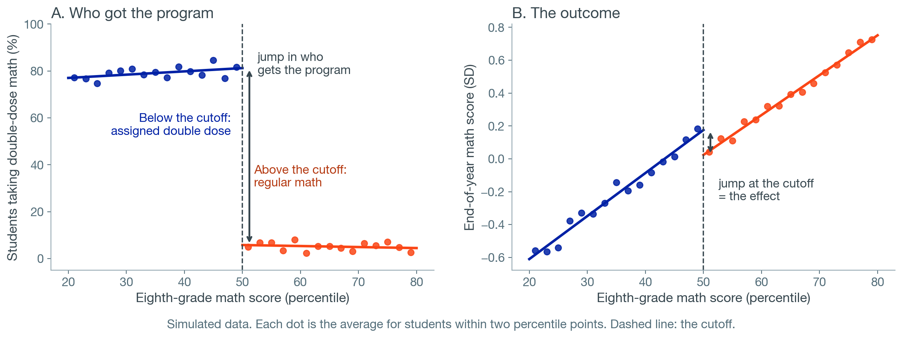
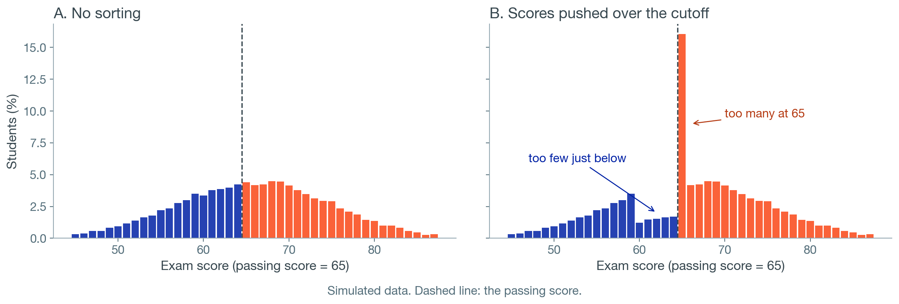
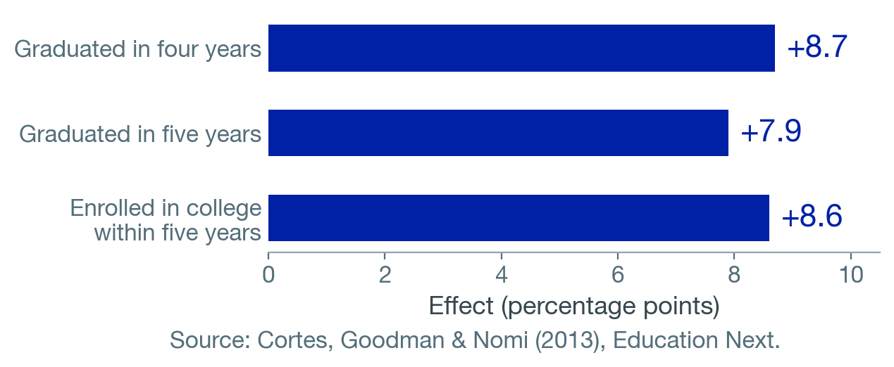
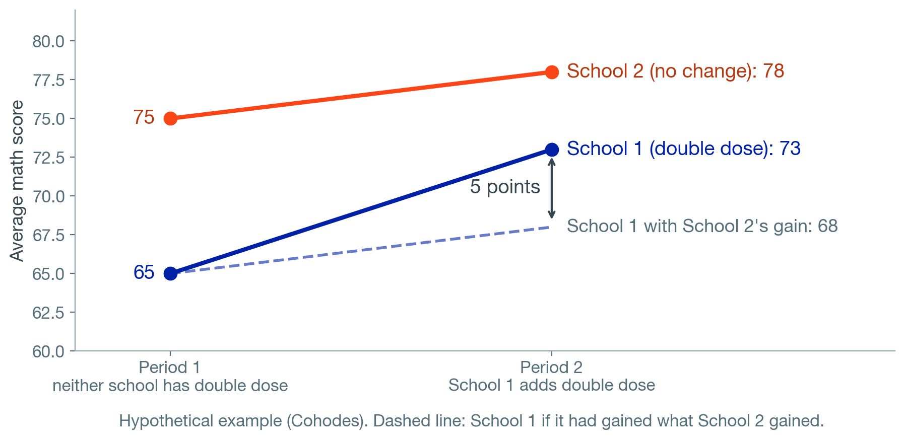
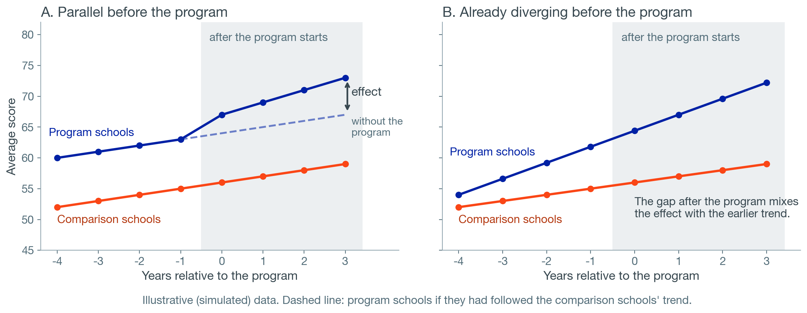
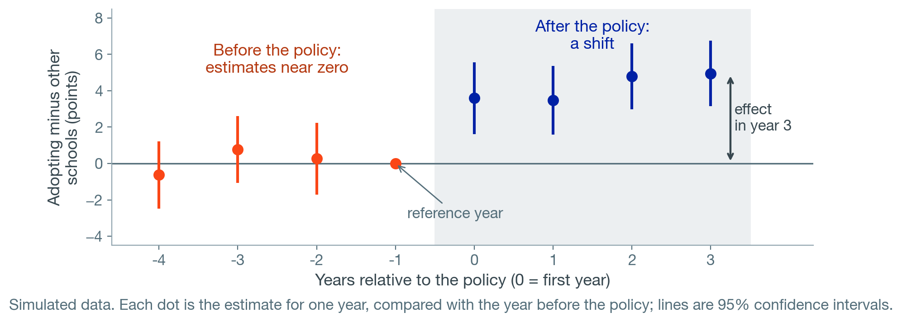

Introduction to Causal Inference II: Quasi-Experimental Research
Module 8 · Recorded Lecture
EDA6427 | Applied Education Policy Research
Where We Are
LAST MODULE
Randomized Controlled Trials
Researchers create the fair comparison by assigning a program at random
Module 7
TODAY
Quasi-Experimental Research
Finding a fair comparison when random assignment is not possible
Module 8
NEXT MODULE
Evidence and Decision-Making
How evidence is used in educational decisions
Module 9
Today
1
When randomization is not possible natural experiments
2
Regression discontinuity comparisons at a cutoff
3
Difference in differences and panel methods comparisons of change over time
4
Matching comparisons on measured characteristics
5
Reading a quasi-experimental study six questions
Goals for This Module
Quasi-experimental studies are now common in education research, policy reports, and the evidence reviews districts use to choose programs.
Read these studies with confidence
Identify the design, the assumption it relies on, and whether the authors show evidence for it.
Prepare for further coursework
If you pursue causal inference, these concepts are the foundation for that coursework.
Conducting quasi-experimental research requires substantial additional training. In this course, you will read and evaluate these studies.
When a Randomized Controlled Trial Is Not Possible
Many questions in education cannot be answered with a randomized trial: retaining students in grade, school funding, state accountability laws.
Not feasible
The policy already happened or applies to everyone at once.
Outcomes such as graduation take years to appear.
The trial would cost too much.
Ethical and fairness concerns
Withholding a promising program from half of students.
Assigning something that might harm, such as retention.
Schools and families object to deciding by lottery who gets help.
Natural Experiments
Natural experiment: a rule or event, outside the researchers’ control, sorts people into groups for reasons unrelated to their outcomes. Designs that use one are called quasi-experimental.
Test-score cutoffs
Students below a line get a program; students above do not.
Birthdate cutoffs
The date that decides when children start school.
Class-size rules
A grade splits into two classes once enrollment passes a set number.
Policy changes
A law reaches some schools or states and not others, or in different years.
Attendance-zone boundaries
Neighbors on either side of a line attend different schools.
Admissions lotteries
Oversubscribed schools admit by lottery (Module 7 charter schools).
When We Can’t Randomize, We Need Additional Assumptions
Design
How the groups are formed
What has to be true
Regression discontinuity
A cutoff on a score
People just above and just below the cutoff are alike except for the program
Difference in differences
A policy that reached some places and not others
Without the policy, both groups would have changed by the same amount
Matching
People’s own choices, paired on measured characteristics
Nothing important differs beyond what was measured
A fourth approach, instrumental variables, is beyond this course.
When you read a quasi-experimental study, check that it shows evidence its assumption holds.
ESSA: a well-designed quasi-experimental study is Tier 2, moderate evidence.
What Works Clearinghouse: at most “Meets Standards With Reservations,” and only if the groups were similar at the start.
Regression Discontinuity
A point or two on one test reflects a good or bad day as much as real differences in skill. Near the cutoff, the comparison works much like a lottery.
Running variable: the score that decides who gets the program. Bandwidth: how close to the cutoff the comparison looks.
Hypothetical example.
Reading an RD Graph

Look for two jumps at the cutoff: in who got the program, and in the outcome.
Checking an RD: Sorting at the Cutoff

It happens
New York’s Regents exit exams, scored locally: systematic manipulation of scores just below the proficiency cutoffs.
Dee, Dobbie, Jacob & Rockoff (2019)
What a study should show
The distribution of scores around the cutoff, and characteristics measured before the program on each side (no jumps).
Double-Dose Algebra in Chicago
The policy
Starting in 2003, ninth graders who scored below the national median on the eighth-grade math test were required to take two periods of algebra.
The jump was partial: 55% scored below the median; 42% were assigned the double dose.
Cortes, Goodman & Nomi (2013, 2015)
The findings
Higher credits earned, test scores, graduation, and college enrollment.

Largest for students with below-average reading skills.
Reading it: the estimate describes students near the median. The treatment was a bundle: more time, different classmates, a different teaching approach.
PlayPosit Question 1
A state awards a college scholarship to students with a high school GPA of 3.0 or higher. A study compares college enrollment for students just above and just below 3.0. Which finding would most weaken the study?
Students with GPAs far above 3.0 enroll in college at much higher rates than students far below it
The study uses state administrative records rather than a survey
After the scholarship was announced, far more students finished with a GPA of exactly 3.0 than 2.9, and teachers reported many requests to raise grades
The scholarship covers only part of tuition
Hypothetical example.
Difference in Differences: Two Schools, Two Periods

(73 − 65) − (78 − 75) = 8 − 3 = 5 points. The groups can start at different levels; the design compares changes.
The Parallel Trends Assumption
Without the program, the two groups would have changed by the same amount. Check the years before the program.

Panel B: the design would credit the program with a trend already underway.
Many Schools, Many Years: Panel Methods

Panel data with fixed effects (Module 6)
School fixed effects hold constant what does not change within a school. Year fixed effects hold constant what affected every school that year, such as a new state test. What remains: changes in adopting schools compared with changes in other schools in the same years.
Watch for
Another change at the same time, in the same places
A small number of units: 50 states are 50 units
Standard errors that account for repeated observations of the same schools or states (Modules 5–6)
No Child Left Behind
The comparison
Change in state NAEP scores after the law in states with no prior accountability system, compared with states that already had one.
Dee & Jacob (2011)
The findings
Fourth-grade math: effect size 0.23 by 2007
Eighth-grade math: improvements, particularly among lower-achieving students
Fourth-grade reading: no evidence of an increase
Placebo check: outcomes the law should not affect, such as state poverty rates and median household income.
PlayPosit Question 2
One district moves its high schools to a later start time; a neighboring district keeps its earlier start time. A study compares the change in attendance in the two districts from the year before to the year after. Which evidence would most support reading the result as an effect of the later start time?
For five years before the change, attendance in the two districts rose and fell together
The two districts had the same attendance rate in the year before the change
Attendance was higher in the district with later start times after the change
The neighboring district has more high schools
Hypothetical example.
Matching on Measured Characteristics
Matching: pair each participant with a nonparticipant who looks the same on measured characteristics: prior scores, demographics, school.
Propensity score: each person’s estimated probability of participating, from measured characteristics. Participants without a comparable nonparticipant are left out, and the results do not describe them.
Matching balances what was measured. Differences in motivation or family support that were not measured remain (Module 7: selection bias).
PlayPosit Question 3
A study matches each high school student who took dual-enrollment courses with a student who did not, with the same GPA, test scores, and family income. The matched dual-enrollment students are more likely to enroll in college. What is the main concern?
The matched groups are too similar to compare
The study should have used a lottery to choose which students to match
College enrollment cannot be measured reliably
Students who chose dual enrollment may differ in motivation or encouragement at home, which the match did not measure
Hypothetical example.
Other Quasi-Experimental Studies in Education
Third-grade retention, Florida
Design: regression discontinuity at the reading-test cutoff for retention.
Found: large achievement gains that faded entirely against same-age peers but lasted through grade 10 against same-grade peers; higher GPAs, fewer remedial courses; no effect on graduation.
Schwerdt, West & Winters (2017)
An extra math class, Miami-Dade
Design: regression discontinuity at the 50th percentile on the fifth-grade math test.
Found: 0.16–0.18 SD faster growth in math; up to half lost a year later, about one-third left after two years; less time for other subjects.
Taylor (2014)
School finance reforms
Design: timing of court-ordered reforms across states and birth cohorts.
Found: 10% more per-pupil spending in every year of school: 0.31 more years of education, about 7% higher wages, 3.2 points less adult poverty; larger for children from low-income families.
Jackson, Johnson & Persico (2016)
Comparing the Designs
Design
Groups formed by
Evidence to look for
Whom the estimate describes
Randomized trial (Module 7)
A lottery
Balance; attrition overall and by group
The people in the trial
Regression discontinuity
A cutoff on a score
Jumps in who got the program and in the outcome; no sorting; no jumps in prior characteristics
People near the cutoff
Difference in differences
A policy change in some places
Parallel trends before the policy; no other change at the same time
The places and years that adopted it
Matching
Choices, paired on measured traits
Balance on measured traits; an argument about what was not measured
Participants with comparable nonparticipants
PlayPosit Question 4
A district gives a reading intervention to third graders who score below the 25th percentile on a fall screener. A regression discontinuity study finds it raised spring scores for students near the 25th percentile. A principal asks whether it would help students at the 5th percentile. Which response is best supported?
Yes. The estimate applies to every student who received the intervention
The estimate describes students near the cutoff. It does not show the effect for students far below it
No. The intervention has no effect for students far from the cutoff
The study cannot say anything, because it was not randomized
Hypothetical example.
Six Questions for Reading a Quasi-Experimental Study
1
How were the groups formed? The rule, cutoff, or event, and at what level: students, schools, or states.
2
What did each group receive? Did everyone below the cutoff, or in the adopting states, get the program?
3
What has to be true, and what evidence is offered? No sorting; parallel trends; balance.
4
What else changed at the same time, and who is missing?
5
How large is the effect, and how precise? Effect size and confidence interval.
6
Who do the results apply to? Near the cutoff; the places and years that changed.
Research Critique 3 and the Final Project
Final Project Milestone 1
Choose your format: Option A, Original Research: a proposal with a preliminary analysis of data you can get. The design section says what comparison would answer your question, how the groups were formed, what has to be true, and what would violate it.
Option B, Research Synthesis: a structured review of the evidence on a policy question. Use the six questions to judge each study’s credibility.
Also this module
Research Critique 3: the Module 7 questions, applied to Roschelle et al. (2016)